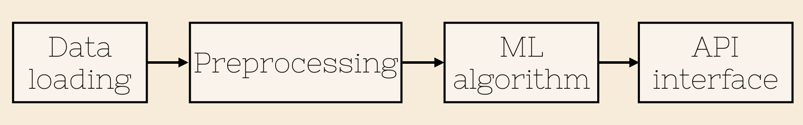
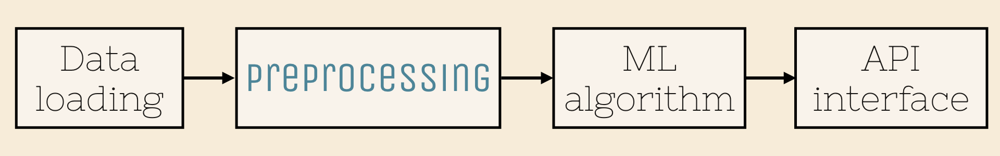
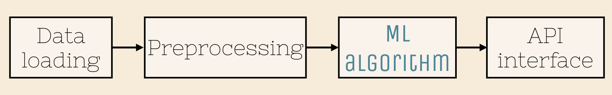
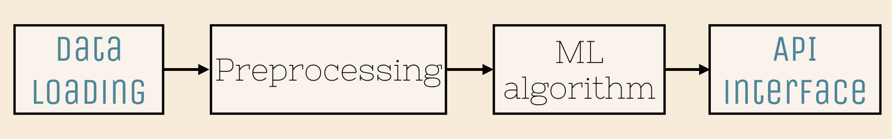
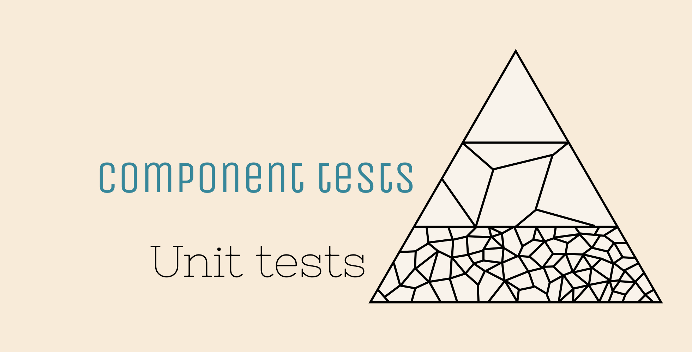
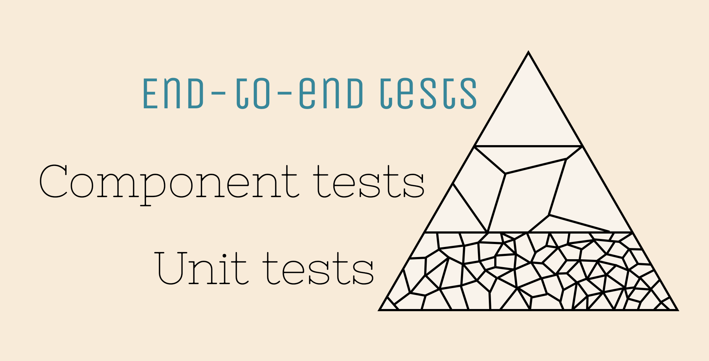
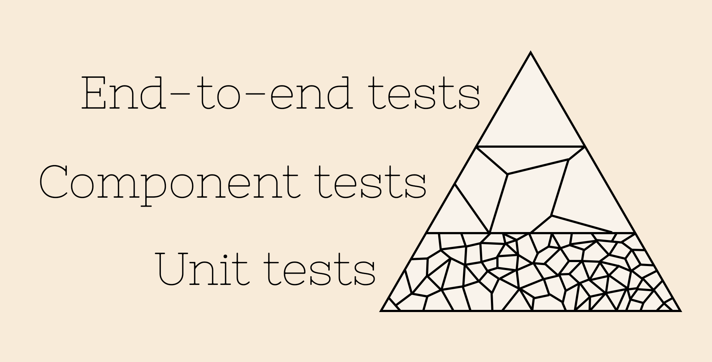

Introduction to tests for data scientists
Sarah Diot-Girard
About me
- Data scientist at

- Interested in devops and ethics
 @SdgJlbl
@SdgJlbl
Prologue
Definitions and concepts
Why test?
Testing by users is no longer a thing
Why test?
ML algorithms fail silently
Why test?
Bugs in data + bugs in code = a lot of bugs
What is a test?
A piece of software that can either pass or fail and whose outcome is correlated with functional correctness
What is a good test?
- Readable and simple
- Thorough
- Specific
- Repeatable (stable)
- Isolated
- Fast
Topics we won't cover
- Debugging your maths
- How to set up a CI
- Data monitoring
- Test-driven development
- Coverage and mutation testing
Topics we will cover
Testing a ML pipeline
 preprocessing -> ML algorithm -> API interface" style="width: 100%">Chapter 1
Unit tests for preprocessing
 preprocessing -> ML algorithm -> API interface" style="width: 100%">Preprocessing
- Handling missing values
- Encoding labels
- Normalizing values
- ...
Preprocessing
All these operations can be written as functions.
df_filled = fill_missing_values(df_raw, how='average')
df_cleaned = remove_outliers(df_filled)
Functional programming
y = f(x)
-> no side effects
df = fill_missing_values(df_raw, how='average') ✔
fill_missing_values(df_raw, how='average') ✗
df = fill_missing_values('raw_df.csv', how='average') ✗
df_out, label_mapping = encode_labels(df_in) ✔
Output(s) depend only on input(s)
Unit tests
... test units of source code
Unit tests
... work great with functional programming
Unit tests
Think about your invariants!
Property-based testing -> hypothesis
import numpy as np
from hypothesis import given
from hypothesis.extra.numpy import arrays
def normalize(arr):
return np.zeros(arr.shape)
@given(arrays(dtype=float, shape=(3,4)))
def test_normalize_is_between_bounds(input):
output = normalize(input)
assert np.all(output >= 0)
assert np.all(output <= 1)
@given(arrays(dtype=float, shape=(3,4)))
def test_normalize_is_idempotent(a):
normalized_input = normalize(input)
output = normalize(normalized_input)
assert np.all(output == normalized_input)Add a few trivial tests with simple examples
Chapter 2
ML algorithms and their plight
 preprocessing -> ML algorithm -> API interface" style="width: 100%">Algorithms
are hard to unit test
Algorithms
- ... are iterative processes
- ... are stochastic
- ... suffer from the oracle problem
- ... are slow
Algorithms are iterative
Unit-test what you can
Component tests
... test whole chunks of your code
(data loading, preprocessing, model training...)
Algorithms are stochastic
Fix random seed
Average multiple runs
Algorithms don't have a test oracle
Differential testing
Metamorphic testing
Reference tests
Differential testing
Check multiple implementations
against one another
Differential testing
Check for non-regression between
your old implementation and your new one
Check against a random or uniform baseline
Metamorphic testing
Run the same implementation multiple times with modified input
\[ \Phi (f(x)) = f( \phi (x)) \]Metamorphic testing
def test_compute_variance():
x = np.random.rand(25)
assert compute_variance(x * -1) == compute_variance(x)
assert compute_variance(2 * x) == 4 * compute_variance(x)
Reference tests
Store input and reference output
Check that computed output matches reference output
The necessary evil of reference tests
- Low coverage
- Hard to maintain
Reference tests
... can be kept up-to-date with tdda
Algorithms are slow
And many mitigation strategies make them slower
Have two test suites:
- a fast one that runs at each modification
- a slow one running every night
Chapter 3
I/O and end-to-end tests
 preprocessing -> ML algorithm -> API interface" style="width: 100%">How to test I/O?
Functional programming won't work
because of side-effect
Mocking can help
Mocks
... mimic the behaviour of an object in a controlled way
def preprocessing(df: pd.DataFrame) -> pd.DataFrame:
...
def model_training(arr: np.ndarray):
...
Testing the whole pipeline
End-to-end tests
Test hierarchy
Test hierarchy
Test hierarchy
Test hierarchy
Setting up a CI
Automated tests are really automatic when they are automatically run
Epilogue
Tips and tricks
for better testing of ML pipelines
Have some automated tests
Anything is better than nothing
Have a CI
Else your tests won't run as often
as they should
Testing ML algorithms is hard
But not hopeless
Befriend software engineers
They are happy to share their knowledge
That's all for me

To go further
Testing and validating machine learning classifiers by metamorphic testing, X. Xie et al
On testing machine learning programs, H. Ben Braieka and F. Khomh